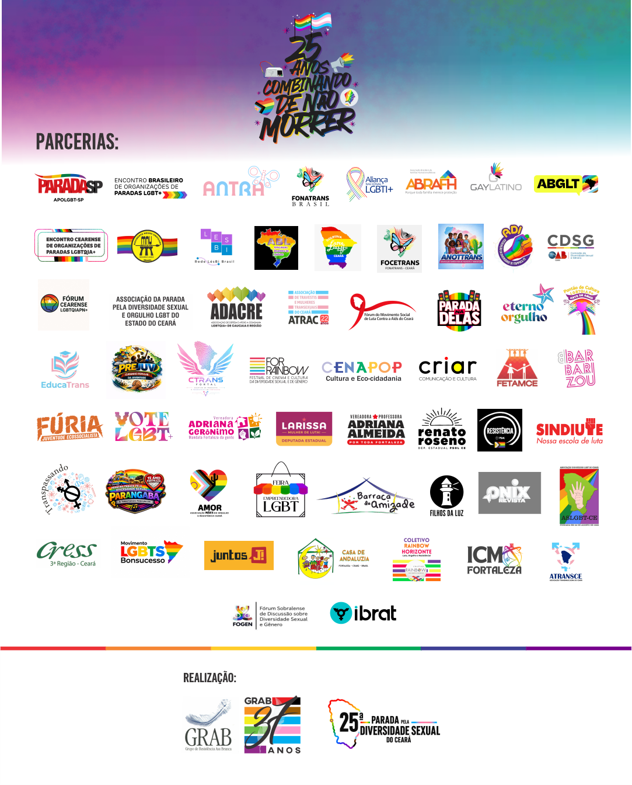

25ª Parada pela Diversidade Sexual do Ceará — 28 de junho de 2026

O Tema da 25ª Edição
25 Anos
Combinando
de Não Morrer!

A Parada pela Diversidade Sexual do Ceará chega a sua 25ª edição com o tema: "25 anos combinando de não morrer", que faz referência à célebre frase da escritora Conceição Evaristo. No livro "Olhos d'água", para destacar a capacidade do povo negro de sobreviver ao racismo, a mineira diz: "eles combinaram de nos matar, mas nós combinamos de não morrer". Assim, a Parada do Ceará aproxima-se ainda mais da agenda antirracista. Afinal, o Brasil é o país que mais mata pessoas LGBTQIA+ no mundo há 17 anos consecutivos.
A Parada será realizada no dia 28 de junho de 2026, data em que se celebra o Orgulho LGBTQIA+. Espera-se uma parada de grande celebração, mas também de demonstração das lutas LGBTQIA+ por respeito e cidadania, reunindo cerca de 1,5 milhão de pessoas na Avenida Beira-Mar em Fortaleza.
Consulte também nosso Manifesto Político .
Siga a 25ª Parada no Instagram @paradaceoficialProgramação Oficial
| Hora | Atividade |
|---|---|
| 15h | Concentração em frente à Barraca do Joca |
| 16h | Abertura oficial da 25ª Parada |
| 16h30 | Hora da militância LGBTQIA+ |
| 17h30 | Saída da concentração ao pôr do sol |
| 18h | Minuto de silêncio e protesto contra LGBTIFOBIA |
| 18h01 | Apresentações artivistas: DJs e Shows |
| 22h | Encerramento |

Programação Alusiva
Sessão Solene Homenagem aos 25 Anos de Paradas no Ceará
Sessão Solene Alusivo ao Mês do Orgulho LGBTQIA+
Exposição 25 Anos – Parada pela Diversidade Sexual do Ceará
Pré Parada da Diversidade Sexual e Feira de Empreendedorismo LGBTQIA+ de Fortaleza
Mostra FOR RAINBOW ORGULHO
Arraiá da Comadre Associação dos Surdos LGBT
Parada da Diversidade de Guaiuba
5º Pedal do Orgulho
2º Sambão do Orgulho
Sessão Solene em homenagem ao Dia Internacional do Orgulho LGBTI+
Coletiva de Imprensa da 25ª Parada
Seminário-Ato da 25ª Parada pela Diversidade Sexual do Ceará
Esquenta da Parada (Ato-Show)
Projeto RetifiAção – Mutirão de Retificação de Nome Social
3º Festival da Diversidade (1ª Noite)
Treinão da Diversidade
I Encontro de Homens Gays do Ceará
3º Festival da Diversidade (2ª Noite)
Obs.: Programação sujeita a alterações.
Celebrando o Jubileu de Prata do maior evento de visibilidade LGBTQIA+ do estado. A luta por direitos ocupa todo o território cearense — das ruas às urnas, por democracia e contra a misoginia.
Marcos Legais
Participação de Trios Elétricos
Até o momento, oito trios elétricos estão confirmados na 25ª Parada. A programação de cada um será divulgada em breve aqui no site. Instituições que desejem colocar trios na avenida têm até 10 de junho para apresentar solicitação e documentação ao GRAB.
Diversidade e Acessibilidade
A 25ª Parada pela Diversidade Sexual do Ceará contará com a ala "Diversidade e Acessibilidade", na qual participarão pessoas com deficiência e condições específicas. Além de um espaço na avenida, os trios receberão as pessoas com deficiência – caso elas desejem – e intérpretes de libras serão disponibilizados para o momento da militância, que marca o início da marcha pela avenida Beira-Mar.
Um Verdadeiro Mar de Gente…
| Ano | Público Estimado |
|---|---|
| 1999 | 500 pessoas |
| 2001 | 2.500 pessoas |
| 2002 | 10.000 pessoas |
| 2003 | 30.000 pessoas |
| 2004 | 60.000 pessoas |
| 2005 | 200.000 pessoas |
| 2006 | 500.000 pessoas |
| 2007 | 800.000 pessoas |
| 2008 | 800.000 a 1.000.000 de pessoas |
| 2009 a 2017 | 1.000.000 de pessoas |
| 2018 a 2025 | 1.500.000 de pessoas |
Apoio
